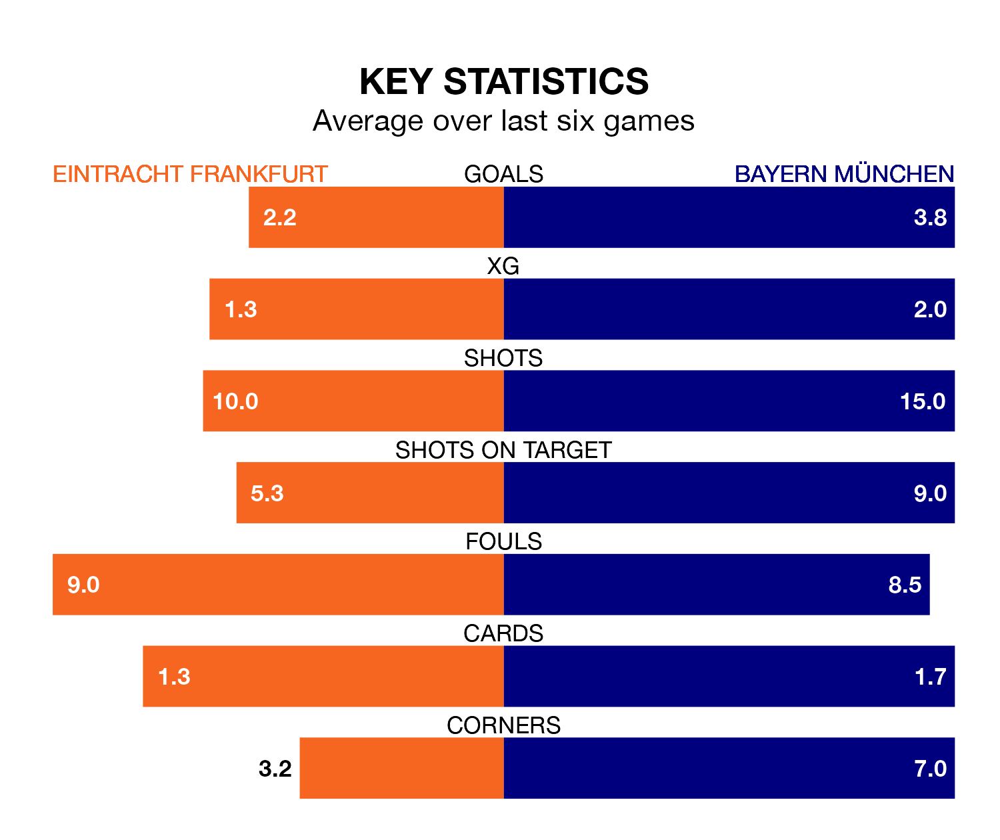

Two of the Bundesliga's meanest defences go head-to-head at Deutsche Bank Park on Saturday, when Bayern München visit Eintracht Frankfurt.
No teams have conceded fewer goals than Bayern München to date: the away side have let in just nine goals in 12 games.
Eintracht Frankfurt have conceded 15 goals in 13 games, giving them the joint-fourth tightest back line so far this season.
Key to Bayern München's home form has been Sven Ulreich, who has allowed 0.75 goals past him per 90 minutes, compared to 1.17 for Kevin Trapp in the opposite net.
Eintracht Frankfurt are in mixed form in the Bundesliga, with two wins and two draws from their last six games.
With six wins and no losses over that period, Bayern München's form is much better – they have taken 18 points from 18, compared to the home team's eight.
In Harry Kane, the visitors have the league's sharpest shooter so far this season. He has notched 18 goals in 12 appearances.
His goal rate of one every 58 minutes is much quicker than that of Omar Marmoush, Eintracht Frankfurt's top scorer with a goal every 153 minutes, and a total of six goals in 13 games.
Bayern München are second in the table after 12 games, of which they have won 10 and drawn two, earning 32 points.
Eintracht Frankfurt are five places behind Bayern München in seventh, with four wins and six draws putting them on 18 points.
In the last 10 years, Eintracht Frankfurt and Bayern München have played each other on 22 occasions. Eintracht Frankfurt won four of them, Bayern München 15, and they drew three times.
On average, Eintracht Frankfurt scored 1.0 goals and Bayern München 2.7 in those matches.
Their last meeting was on January 28, when they played out a 1-1 draw.
Eintracht Frankfurt's last match was on Sunday, a 2-1 loss against Augsburg, with Finn Dahmen getting the goal for Eintracht Frankfurt.
Bayern München beat Köln 1-0 last time out, on November 24, with Kane on the scoresheet.
